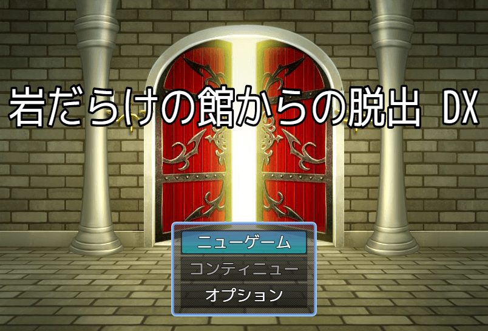

文化祭展示ゲームの改良版、
「岩だらけの館からの脱出 DX」公開！
2025年度の文化祭で、多くの人に遊んでもらったあの脱出ゲームが2026年度の文化祭で、帰ってきて、さらにそこから少しだけ改良して帰ってきた！！（画像をクリックしてゲームスタート）

操作方法
Z 決定/調べる
X 戻る/メニュー
矢印キー 移動/選択
Shift ダッシュ（オプションから常時ダッシュをオンにすることを推奨します）
＊クリック、タップ操作可能
説明
・岩を押して、赤い床の上に置こう。そしたら、扉が開いて次に進める。
・間違えたら、部屋を1つ戻れば元通り。
・「制限時間あり」は、タイムアップになると体が爆発。
・「制限時間なし」は、気軽に遊べる。
・HARD MODE は「制限時間あり」でクリアすると、SURPER HARDMODE は
HARD MODE をクリアすると挑戦するためのヒントを得られる。
2025ver、2026verからの変更点
・マップにもう少し手を込みました
・SUPER HARDMODEを追加しました
・SURPER HARDMODEへの挑戦を2026verより優しくしました
・遊び心で追加しました
©Gotcha Gotcha Games Inc./YOJI OJIMA 2020
このゲームはRPGツクールMZで作られました。なので、以下のことを表記します。
・このゲームはGGG製品を使って作られました。
・RPG MAKERは、株式会社Gotcha Gotcha Gamesの登録商標又は商標です。
・このゲームから株式会社Gotcha Gotcha Gamesのプログラム又は素材を抽出して頒布等する行為（有償・無償を問いません。）を禁じます。
・このゲームから株式会社Gotcha Gotcha Gamesのプログラム又は素材を抽出して改変する行為を禁じます。
このゲームから株式会社Gotcha Gotcha Gamesの素材を抽出して自作のゲームに利用する行為（有償・無償を問いません。）を禁じます。